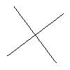

绘图
讲道理有像素操作还不够你们玩么
要啥自行车啊
画线
这个tlibmp提供了一个简单而又蹩脚的画线API，示例如下：
/* test.c */
#include "tlibmp.h"
#include <stddef.h>
int main(void)
{
tlb_image_t * image = NULL;
/* Create new image */
image = tlb_img_new(100,100,tlb_rgb(255,255,255));
/* Draw two black line in this image */
tlb_draw_line(image,10,20,90,80,tlb_rgb(0,0,0));
tlb_draw_line(image,20,90,80,10,tlb_rgb(0,0,0));
/* Save Image */
tlb_save_bmp(image, "out.bmp");
/* Free Object */
tlb_img_free(image);
return 0;
}
效果图：

在这个例子中我们用tlb_draw_line()函数来完成画线。
tlb_draw_line()接受六个参数：
- 图像指针
- 第一个点的坐标(x0和y0两个参数)
- 第二个点的坐标(x1和y1两个参数)
- 线条颜色
然后第二个例子就是第一页的图片：

这个图是我用来测试这个画线API能否正确应对各种方向的线而诞生的。
原谅我的毫无注释而且极其凌乱的垃圾代码
/* test.c */
#include "tlibmp.h"
#include <stddef.h>
int main(void)
{
tlb_image_t * image = NULL;
int32_t x,y;
image = tlb_img_new(510,510,tlb_rgb(0,0,255));
y = 505;
for(x = 5; x < 505; x+=50){
tlb_draw_line(image,5,5,x,y,tlb_rgb(255,255,0));
}
for(y = 505; y >= 5; y-=50){
tlb_draw_line(image,5,5,x,y,tlb_rgb(255,255,0));
}
y = 5;
for(x = 5; x < 505; x+=50){
tlb_draw_line(image, 5, 505, x, y, tlb_rgb(255,255,0));
}
for(y = 505; y >= 5; y-=50){
tlb_draw_line(image, 5, 505, x, y, tlb_rgb(255,255,0));
}
y = 5;
for(x = 505; x > 5; x-=50){
tlb_draw_line(image, 505, 505, x, y, tlb_rgb(255,255,0));
}
for(y = 5; y <= 505; y+=50){
tlb_draw_line(image, 505, 505, x, y, tlb_rgb(255,255,0));
}
y = 505;
for(x = 505; x > 5; x-=50){
tlb_draw_line(image, 505, 5, x, y, tlb_rgb(255,255,0));
}
for(y = 505; y >= 5; y-=50){
tlb_draw_line(image, 505, 5, x, y, tlb_rgb(255,255,0));
}
tlb_save_bmp(image, "out.bmp");
tlb_img_free(image);
return 0;
}
画三角形
其实本来我没想写这个，虽然 画三角形其实是一个很常用的操作，但是实现略显麻烦，因此，在老余的强烈要求下，这里提供了一个 便捷的 画三角形的API
/* test.c */
#include "tlibmp.h"
#include <stddef.h>
int main(void)
{
tlb_image_t * image = NULL;
/* Create new image */
image = tlb_img_new(100,100,tlb_rgb(0,0,0));
/* Draw a white triangle in this image */
tlb_draw_triangle(image,10,10,50,90,90,50,tlb_rgb(255,255,255));
/* Save Image */
tlb_save_bmp(image, "out.bmp");
/* Free Object */
tlb_img_free(image);
return 0;
}
运行结果如下：
bugs:
已知在clang的O2和O3优化选项下可能会出现无法正确绘图的问题（有可能会报段错误）